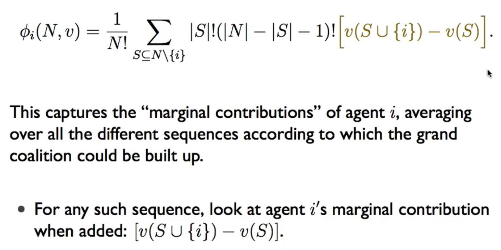
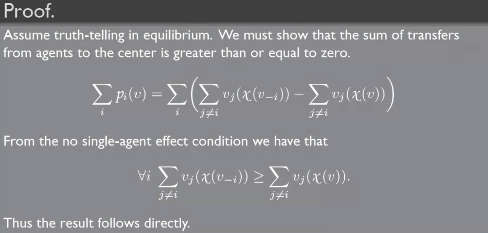
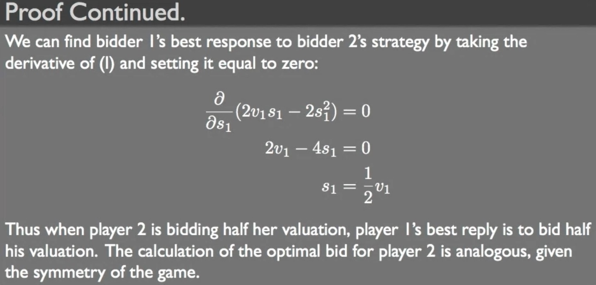

Game Theory¶
Bayesian game¶
- https://www.youtube.com/watch?v=E0_CA9TwZ8c
- dominated -> strategic form -> dominated -> pure strategy & mixed strategy
Coalition game¶
transferable utility¶
- utility can be losslessly transfered between players
- have a common currency with absolutely equal value
- utility of the currency independent to anything else
- have a common currency with absolutely equal value
hedonic game¶
- non-transferable utility game
- players don't care ahout the rest of the partition
- coalitions don't allocate profit for players
- e.g. stable marriage
The top coalition property of Banerjee et al. (2001) and the common ranking property of Farrell and Scotchmer (1988) are sufficient conditions for core stability in hedonic games.
top coalition¶
defined in Core in a simple coalition formation game
shapley value¶
- each player's marginal contribution
- rules
- dummy
- additive
- union of any 2 set >= sum
- 
- e.g.
- \(v(\{1\})=1\), \(v(\{2\})=2\), \(v(\{1,2\})=4\) if {1} {1,2}, \(\phi_1=1\), \(\phi_2=3\) if {2} {1,2}, \(\phi_1=2\), \(\phi_2=2\) \(\phi_1=1.5\) \(\phi_2=2.5\)
- 3 player in majority vote, 1 can veto
- core
- \(x_1+x_2\geq1\), \(x_1+x_3\geq1\), \(x_1+x_2+x_3=1\), \(x_i\geq0\)
- \(x_1=1\),\(x_2=x_3=0\)
- UN
- shapley
- \(x_1=\frac{2}{3}\), \(x_2=x_3=\frac{1}{6}\)
core¶
- stable coalition (s.t. none has the incentive to deviate and form a new coalition)
- each coalition get at least what they can generate alone
convex¶
- \(v(S\cup T)\geq v(S)+v(T)-v(S\cap T)\)
- nonempty core
- the shapley value is the core
- fair & stable
stability¶
- Nash stable
- with all players being selfish, none will move
- Individually stable
- with all players respecting pareto criterion, none will move
- Nash stable \(\in\) Individually stable
Since agents are assumed to be rational, agents only engage in a unilateral deviation if it makes them better off. Any partition in which no such deviation is possible is called Nash stable (NS).
This type of deviation can be refined by additionally requiring that no agent in the welcoming coalition is worseoff when agent i joins. A partition in which no such deviation is possible is called individually stable (IS).
ref: Reaching Individually Stable Coalition Structures in Hedonic Games
rules¶
- coalition unanimity
- all members need to agree
- equilibrium binding agreements
- coalitions can only break into smaller coalitions
- open membership
- no rules
externality¶
an equilibrium coalition structure has positive externalities if forming a coalition or merging into a big coalition will make other coalitions worse off
social choice¶
voting scheme¶
- plurality
- most-preferred by most people
- cumulative voting
- multiple votes
- approval voting
- unlimited votes (?)
- plurality with elimination
- iteratively eliminate one with fewest votes and revotes until a majority winner
- France
- Borda Rule, Borda Count
- preference ranking
- sum score, highest one wins
- successive elimination
- a,b,c,d,e (((a vs. b) vs. c) vs. d) vs. e
- many legislative process
Condorcet consistency¶
- an outcome that wins every pairwise comparisons
- Condorcet cycle
- A>B, B>C, C>A
social welfare function¶
- decide the entire preference ordering
- pareto efficient
- whenever everyone agrees on one ordering, the social welfare function select that ordering
- independent of irrelevant alternatives, IIA
- a&b depend on a&b a&c c&d
- dictatorship
- return
- satisfy pareto & IIA
- everyone prefer a over b dictator obviously prefer a over b too social welfare function i.e. dictator itself select a over b - pareto efficient
- only care about el dictator, so IIA
- Arrow's Theorem
- any social welfare function W with over 3 or more outcomes that is pareto efficient & IIA, is dictorial
social choice function¶
- decide only the winner
- weak pareto efficiency
- b if a > b for everyone
- monotonicity
- if A's already winning, A will remain the winner when increase the support for A
- dictatorship
- exist some agent j such that social choice function C always selects the top choice of j
- Muller-Satterthwaite Theorem
- any social choice function that is weakly pareto efficient & monotonic, is dictorial
- plurality satisfies weak PE & non-dictorial, so it's not monotonic
single-peaked preference¶
- median voting
- Condorcet winner exist whenever odd voters
- no incentive to lie
transitivity¶
x > y, y > z x > z
mechanism design¶
- inverse game theory
- design a game
- bayes-nash implementation
- problems
- could be more than one equilibrium
- agents may mis-cooperate and plan none of the equilibria
- asymmetric equilibria (?)
- refinement
- symmetric bayes-nash implementation
- ex-post implementation
- direct implementation
- indirect implementation
- Duverger's Law
- direct relevation mechanism
- each agent is asked to report his individual preferences
- simultaneous move Bayesian game
- Bayesian version of normal form game
- truthful
- tell everything about your true preferences
- indirect relevation mechanism
- agents are asked to send messages other than preferences
- imperfect information Bayesian extensive form game
- relevation principle ^ad0bd2
- if a social choice function can be implemented by any mechanism, then it can be also implemented by a truth-telling direct revelation mechanism
- original (complicated) mechanism fascade truth map play strategy play truthfully ( original mechanism strategy )
- fascade agent mentira function
- significance: direct & truthful without the loss of generality
- Gibbard-Satterthwaite Theorem
- at lease 3 outcomes & social choice function C is onto ( outcome O map ), truthful reporting is a dominant strategy iff C is dictorial
- only consider dominant strategy implementation
- dominant strategy
- single-peaked domains
- median voting
- max/min of peaks
- trade
- has private value for selling/buying goods
- price fixed in advance
- decide to buy/sell at that price
transferable utility mechanism¶
- strictly pareto efficient
- mechanism itself is also an agent
- budget balance
- weak budge balance
- >=
- individual rationality
- ex interim individual rationality
- mechanismaverage over the possible valuations for other agents >= 0
- ex post individual rationality
- equilibrium >= 0
- stronger than ex interim
- tractability
- choice function & payment function \(\in O(n^k)\)
- revenue maximization/minimization
- maximum fairness
- maximize the happiniess of the least happy person i.e. maximize the min utility
- price-of-anarchy minimization
- minimize {best social welfare} \(\div\) {welfare of the worst equilibrium}
- iterate through all equilibrium, select the max ratio of best social welfare & real equilibrium, and minimize it
VCG mechanism¶
- has truth as a dominant strategy
- make efficient choices
- Groves mechanisms
- payment rule
- depend on others
- Vickrey-Clarke-Groves, VCG mechanism
- VCG
- pivotal mechanism
- payment function = max of everyone else's utility when excluding you - when including you (\(i\))
- so if you're not pivotal, you don't pay anything (as you don't change anything)
- can be interpreted as, you get paid the sum of others' utility when you exist, and you pay the sum of others' utility when you don't
- generally >= 0
- social cost of the individual \(i\)
- > 0 you make things worse by existing
- significance
- internalize the externality of your choice
- how your choice affect others will impact your payment
- Green-Laffont Theorem
- truthful reporting is a dominant strategy only if it's Groves mechanism
- e.g.
- selfish routing
- A F
- without AB, min sum of others' cost = 6 (max utility = -6)
- with AB, min sum of others' cost = 2 (max utility = -2)
- so \(p_{AB} = -6-(-2) = -4\), AB get 4
limitations of VCG¶
- require full disclosure
- but in repeated games, agents may want to disclose their information, and VCG isn't a good mechanism in this case
- susceptible to collusion
- if 1&2 collude
- choice is unchanged, but they're better off
- so VCG is susceptible to collusion
- not frugal
- payment is unbounded, might be more than what an agent's willing to accept
- violate individual rationality
- revenue monotonicity violated
- agent 2 can eliminate it's payment by submitting another vote
- couldn't return all revenue to agents
- if VCG return the money collected from agents, it might change agents' incentives
- even if you do something else with the money, if some agents can somehow benefits from it, incentives are changed
- Mayernon-Satterthwaite Theorem
- exist distributions s.t. no Bayesian incentive-compatibile mechanism is simultaneously efficient, weakly budget balanced & interim individual rational
- p(1, 0) sller & buyer
- significance: there exist inefficient trades
breaking limitations¶
- to satisfy individual rationality
- choice-set monotonicity
- the set of choices with one agent removed is a subset of when the agent is involved
- no negative externalities
- when an agents is excluded, the mechanism won't do negative utitlity on the agent
- scenarios that satisfy both
- road building
- the choices is independent of the numbers of agent satisfy choice-set monotonicity
- none would have negative utility under any choice satisfy no negative externalities
- trading
- VCG is ex-post individual rational when the choice-set monotonicity & no negative externalities are both satisfied
- \(x(v)\) = choice of the mechanism
- \(u_i\) = utility under VCG's choice - payment
- \(_{-i}\) = when exclude i
- to satisfy weak budget balance
- no single-agent effect
- the welfare of agents other than \(i\) is weakly increased when dropping i
- e.g.
- VCG is weakly budget-balanced when the no single-agent effect is satisfied
- 
- VCG is as budget-balanced as any efficient mechanism can be if it's ex post individually rational
- satisfies weak budget balance in any case where any dominant strategy, efficient & ex interim (weaker than ex post) is able to
auctions¶
- types of auctions
- English auction
- ordinary one
- Japanese auction
- the auctioneer increases the price continously, people choose when to give up, last person standing wins
- giving up is irreversible
- analytically more tractable than English
- Dutch auction
- the actioneer decreaces the price continously, the first one call you mine wins
- minimal communication
- first-price auction
- sealed bid
- the one writing the highest price wins
- strategically equivalent to Dutch auction
- bid less than valuation
- tradeoff between probability of winning & amount you pay
- no dominant strategy
- 
- more people, you bid closer to your valuation
- async = True
- second-price auction
- sealed bid
- the one writing the highest price wins, but pays what the second-highest bidder writes
- is VCG
- when pivotal, I win and others get nothing when I participate, and the one with the second highest utility wins when I don't participate, so I pay the second highest bid (??????)
- dominant strategy is to bid your true value i.e. truth-telling
- all-pay auction
- sealed bid
- the one writing the highest price wins, but everyone pays what they writes
- definition
- market-based (an exchange in terms of currency)
- mediated (has an auctioneer)
- well-specified (rules)
- rules for bidding
- rules for what information if revealed
- rules for clearing
- when it ends
- allocation
- payment
- under independent private value (IPV) model, the dominant strategy is to bid your true value in English, Japenese & second-price auctions
- you see other bidders in English & Japanese, but under IPV, it makes no difference
revenue equivalence¶
- kth order stastistics
- expected value of kth largest draw = \(\dfrac{n+1-k}{n+1}v_{max}\)
- \(\dfrac{n-1}{n+1}v_{max}\) in second-price auction
- 1st & 2nd price auctions satisfy the requirements of revenue equivalence theorem
- symmetric game symmetric equivalence
- in a symmetric equilibrium, higher bid iff higher valuation
- person with highest valuation wins
- a 1st-price auction bidder bids his expected payment as he's the winner of a 2nd-price auction
- other n-1 values are uninformly drawn from \([0, v_i]\)
- \(E[\text{2nd-highest bid}] = \dfrac{(n-1)+1-1}{(n-1)+1}v_{i}=\dfrac{n-1}{n}v_i\)
- proof
- https://www.coursera.org/learn/game-theory-2/lecture/ZfHhY/4-5-revenue-equivalence 8:40
optimal auctions¶
- optimal reserve price in a second-price auction
- reserve price also acts as another bidder
- if 2 bids are uniformly drawn from [0,1], with reserve price = R
- both < R, \(p=R^2\) revenue = 0
- 1 above 1 below R, \(p=(1-R)(R)\), revenue = R (2nd-highest bid)
- both >= R, \(p=(1-R)^2\), revenue \(\dfrac{1+R}{3}\)
- expected revenue = \(\dfrac{1+3R^2-4R^3}{3}\)
- max when R=\(\dfrac{1}{2}\)
- https://math.stackexchange.com/a/2213498
- virutal valuation

- your valuation, adjusted
- Mayerson's optimal auction
- sell to the agent with the highest virtual valuation
- the winner pay the critical valuation of being the winner
- the optimal is a second-price aunction
- not VCG, not efficient
- can end up not selling
- virtual valuation makes weak bidders more competitive higher bidder need to bids higher, increases the competition
Ch3 Contract Theory¶
- mechanism design for the interactions between employer/seller & employee
- solve assymetric
- give incentive to self-reveal
- in wireless network
- employer/seller/PU/CC
- service provider
- base station
- employee/buyer/SU/ED
- user
- device
- mobile crowdsourcing example
- multidimensional, moral hazard
- employee's contraints
- incentive compatibility, IC
- contract maximize utility
- local downward incentive constraints (LDIC) (?)
- individual rationality, IR
- utility bigger than without contract
- adverse selection
- screening problem
- uninformed party offer the contract
- solve adverse selection ny using relevation principle
- force the informed party to choose the contract that reveil its status
- offer multiple contracts intended for employees with different skill levels
- most incentive problems are a combination of both adverse selection & moral hazard
- bilateral & multilateral
- bilateral
- one-to-one
- multilateral
- one-to-many
- multilateral adverse selection ~ auction
- one & multi-dimensional
- how many you consider
- static & repeated
- static
- memoryless
- one-shot deal, histories don't affect
- repeated
- histories will affect
- more complex
- renegotiation & designing long-term contract
- equivalent to market equilibrium
CRN spectrum scheme¶
- one dimensional, bilateral, static, adverse selection
- cooperative spectrum sharing
- PU SU
- PU = primary user
- SU = secondary user
- down payment, t
- SU
- installment payment, r
- SU
- hidden information adverse selection
- PU doesn't know SU's capability to complete the task
- SU's type
- higher PU decreases down payment, increase installment payment
- lower PU increases down payment, decrease installment payment
- trade-off between &
- solution: PU offers different types of contracs to different types of SUs
- hidden action moral hazard
- PU doesn't know how much effort i.e. transmission power SU put in
- SU's operation cost \(\psi=\frac{c}{2}e^2\)
- c = cost coeff.
- e = effort
- solution: PU designs each contract carefullt
- payoff
- SU
- \(U_{SU_i}=\theta_ie_i(R-r_i)-t_i-\frac{c}{2}e_i^2\)
- \(\theta_i\) = \(SU_i\)'s capability
- \(\theta_ie_i\) = \(SU_i\)'s probability to compete the task
- make c high enough s.t. \(\theta_ie_i<1\)
- R = revenue (if task completed)
- literal meaning: expected profit - down payment - operation cost
- PU
- \(U_{PU_i}=t_i+\theta_ie_ir_i\)
- literal meaning: down payment + operation installment payment
- \(U_{PU}=\displaystyle{\sum_{i=1}^n}\beta_i(t_i+\theta_ie_ir_i)\)
- \(\beta_i\) = \(SU_i\)'s type
- social welfare
- sum of the expected payoff of SU & PU
- \(U=\displaystyle{\sum_{i=1}^n}\beta_i(\theta_ie_iR-\frac{c}{2}e_i^2)\)
- installment payment & down payment
- literal meaning: expected revenue - SU's operation cost
- cases
- general case
- both moral hazard & adverse selection
- PU's payoff maximization problem
- \(\displaystyle{\max_{(t_i,r_i)}\sum_{i=1}^n}\beta_i(t_i+\theta_ie_ir_i)\)
- (IC) \(\theta_ie_i(R-r_i)-t_i-\frac{c}{2}e_i^2\geq \theta_ie_i'(R-r_j)-t_j-\frac{c}{2}e_i'^2\)
- SU
- (IR) \(\theta_ie_i(R-r_i)-t_i-\frac{c}{2}e_i^2\geq 0\)
- SU
- SU's optimal effort \(e_i^*=\frac{1}{c}\theta_i(R-r_i)\)
- down payment t
- lagrange multiplier t iterative
- extreme case
- only moral hazard
- no adverse selection i.e. PU knows SU's capability
- PU's problem
- \(\displaystyle{\max_{(t_i,r_i)}}\space t_i+\frac{1}{c}\theta_i^2(R-r_i)r_i\)
- IR
- solution
- \(t_i=\frac{1}{2c}\theta_i^2R^2\)
- \(r_i=0\)
- down payment installment payment
- only adverse selection
- no moral hazard SU's effort fixed at \(\hat{e}\)
- solution
- \(t_i=-\frac{1}{2}c\hat{e}^2<0\)
- \(r_i=R\)
- PU asks 100% future revenue from SU
- PU pays the operation cost to SU for SU to join
- discussion
- adverse selection
- SU has the incentive to choose the intended contract and reveal its true type
- moral hazard
- provide incentive for SU to reduce its operation cost
- if no moral hazard, when SU reduces the effort, PU will notice and redesign the contract to seize the means of production
- financing contract analysis when only 2 type
- 2 types of SU
- \(\theta_H\): high capability
- \(\theta_L\): low capability
- results
- installment payment \(r_H=0\) regardless of cost coeff. c, revenue R or probability \(\beta\)
- \(\theta_H\)
- low down payment for \(\theta_L\)
- \(\theta_L\) payment revenue
- system performance
- only moral hazard & only adverse selection SU payoff 0 bc SU
- the 2 extreme cases can be the bounds of PU's payoff & social welfare
- moral hazard only upper bound
- adverse selection only lower bound
- cost coeff. payoff & social welfare
- revenue payoff & social welfare
- distribution PU's payoff & social welfare
- PU will ask more money if SU is belived to be a highly capable one \(\beta\) has a negative effect on SU'spayoff
Ch4 stochastic game¶
- absorbing state
- state
- have a absorbing state finite stages
- payoffs at every stage depends on the state
- repeated game: payoff matrix same for every stage, i.e. only has 1 state
- only 1 player markov decision process (like )
- transition probability depend on the state & the actions of the playsers
- only depend on 1 player single-controller stochastic game
- the evolution of state can follow a Markov process or DEs
- stationary strategies
- mixed stategies depending only one the current state
- not on time
- not on past actions or states
- always play the mixed action \(\sigma_{i,s}\) at state \(s\in S\)
- finite-horizon stochastic game
- finite stages
- infinite-horizon stochastic game
- infinite stages
- discounted payoff
- current money is better than future money
- discount factor \(\delta \in (0,1)\)
- \(\epsilon\)-Nash equilibrium
- near-Nash equilibrium
- \(\epsilon=1\) Nash equilibrium
- discounted infinite-horizon stochastic game
- two-player, zero-sum stochastic game
- at most 1 eq payoff at every initial state \(s_1\) (?)
- the value of the game
- every stochastic game with finite state and action space admits a \(\delta\)-discounted Nash equilibrium in stationary strategies
Ch6 Learning in Games¶
- sequential
- player player response,
- converge
- Gauss Seidel Method
- converge
- parallel
- player best response
- less sync, slower convergence
- jacobi method
- lloyd-max algorithm
- supermodular game
- increasing difference
- difference
- potential game
- iteration utitlity
- potetential strictly increase
- if potential max nash
- fictitious play
- mixed stategy
- dominance solvable game
- dominant strategy one left - nash
- regret
- coarse correlated equilibrium
- coarse correlated equilibrium
- block
- NE mixed player
- coarse-correlated equilibrium mixed & pure NE
- \(|a_i\) block
- https://www.youtube.com/watch?v=sQOrIpARr5E
- reinforcement
- decentralized, mixed
- iterate update strategy & utitlity
- recurrent neural network, RNN
- output input
- update all layers
- hidden layers all connected
- echo state networks, ESN
- RNN
- update
- hidden layer connect (sparse) randomization